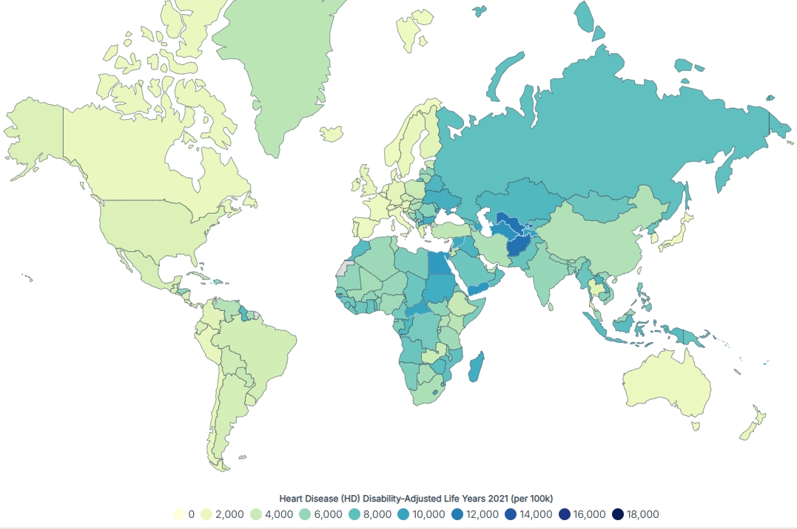
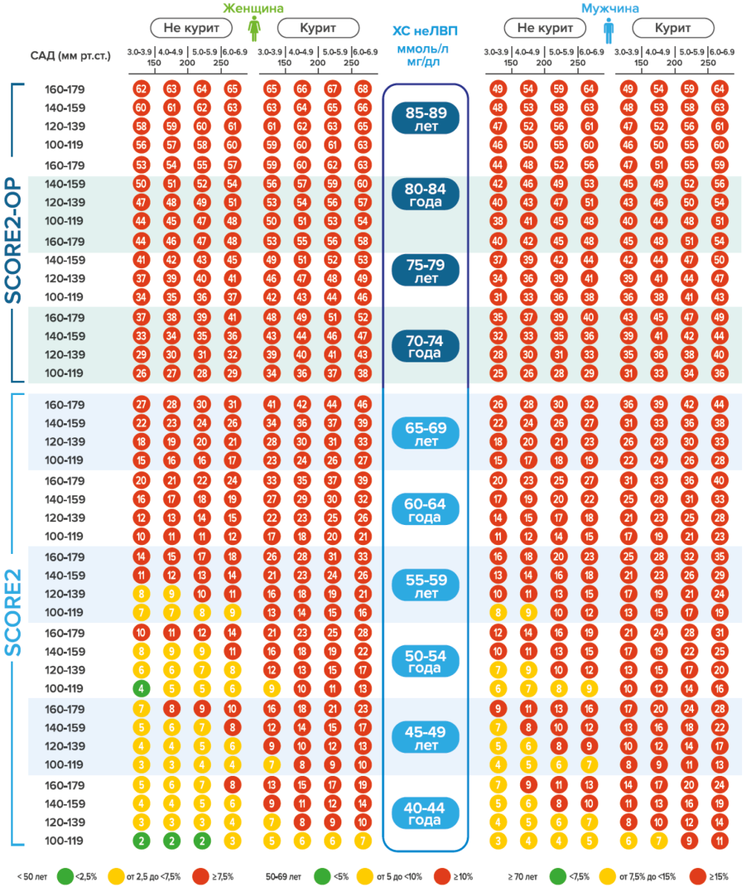
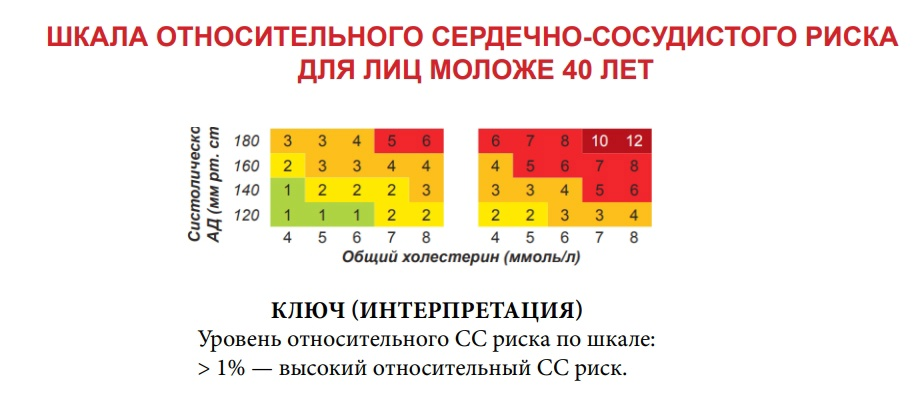
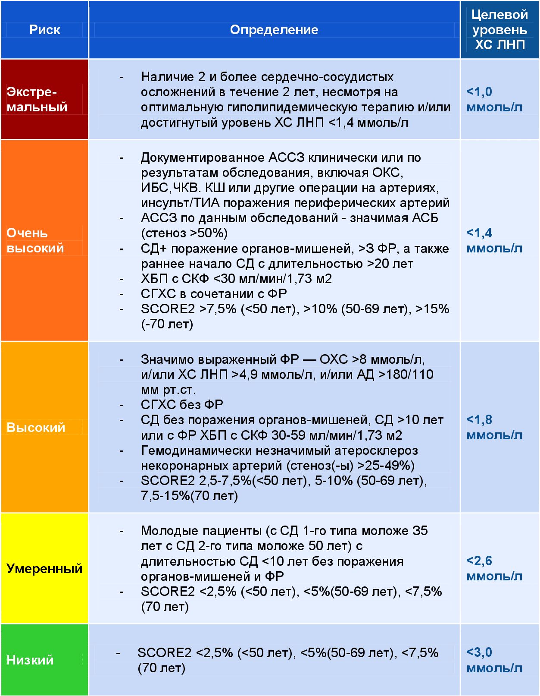

health in your hands.
Сердечно-сосудистый риск
Сердечно-сосудистые заболевания (ССЗ) остаются ведущей причиной смертности во всем мире.
По данным ВОЗ, Россия является одним из стран с очень высоким сердечно-сосудистым риском.
 Карта мира по сердечно-сосудистым заболеваниям (World Population Review)Наиболее значимыми способами профилактики развития ССЗ являются пропаганда здорового образа жизни, включающая в том числе устранение и коррекцию таких важных факторов риска, как курение, нездоровое питание. низкая физическая активность, потребление алкоголя избыточная масса тела (МТ), ожирение, артериальная гипертония (АГ), психосоциальные факторы. Большинство смертей от ССЗ предотвратимы за счет устранения или коррекции перечисленных факторов риска.
В новом документе рассматривается профилактика кардиоваскулярных заболеваний как у практически здоровых людей, так и у пациентов с уже установленными ССЗ, с сахарным диабетом и лиц с рядом других состояний, связанных с повышенным кардиоваскулярным риском (таких как хроническая болезнь почек, воспалительные заболевания, онкологические заболевания и др.). В рекомендациях, наряду с уже используемым калькулятором риска ССЗ SCORЕ, представлены и новые калькуляторы — таблицы SCORЕ2 или SCORЕ2-ОР для старших возрастных групп, а также шкала риска SМАRТ для пациентов с установленным ССЗ, шкала риска EUROASPIRЕ для пациентов с ишемической болезнью сердца (ИБС). Как и предыдущая версия рекомендаций, новый документ наряду с рекомендациями для индивидуальных пациентов включает раздел по профилактике на популяционном уровне (борьба с загрязнением воздуха, доступность физической активности в свободное время, принципы рационального питания и т.д.)
Стратификация сердечно-сосудистого рискаВыявление факторов риска (ФР) имеет важное значение, поскольку дает возможность определить вероятность развития или прогрессирования болезни в течение ближайших 10 лет у конкретного больного.
В странах Европы для оценки сердечно-сосудистого риска и развития смертельного исхода от ССЗ применяется шкала SCORE (англ.: Systematic Coronary Risk Evaluation). Она учитывает такие параметры, как пол, возраст, статус курения, систолическое АД, уровень общего ХС. Шкалы SCORE различаются для стран с высокой и низкой сердечно-сосудистой смертностью, для жителей РФ необходимо использовать шкалу для стран с высоким риском. Шкала SCORE позволяет оценить примерный риск смертельного исхода от ССЗ в течение ближайших 10 лет. В соответствии с последними изменениями, внесенными в Европейские рекомендации по коррекции дислипидемий, шкала SCORE позволяет оценить не только вероятность смерти от ССЗ, но также и риск развития ИБС, который у мужчин примерно в 3 раза, а у женщин в 4 раза выше, чем риск развития сердечно-сосудистой смерти. Эти изменения сделаны с целью возможности сопоставления оценки риска по шкале SCORE с другими международными шкалами и прежде всего с Фрамингемской шкалой, в которой оценивается риск развития ИБС в течение ближайших 10 лет. Следовательно, риск, оцениваемый в 5% смертельного исхода по шкале SCORE, трансформируется в риск развития ИБС путем умножения на 3 для мужчин и на 4 для женщин, что составит 15% и 20% соответственно.
Шкала SCORE предназначена для стратификации ССР у лиц без клинических проявлений атеросклероза. У больных с клиническими проявлениями атеросклероза, при наличии признаков бессимптомного атеросклероза (по данным инструментальных методов обследования), у лиц с подтвержденным ССЗ (например, ИМ, инсульт в анамнезе), СД 2 типа или 1 типа с микроальбуминурией, семейной гиперлипидемией, тяжелой АГ, ХПН оценку риска по шкале SCORE проводить не следует, поскольку такие больные автоматически относятся к группе очень высокого и высокого риска сердечно-сосудистых осложнений и требуют интенсивной терапии, направленной на коррекцию ФР.
 Шкала SCORE-2 и SCORE-2OP для среднего и старшего возраста  Шкала SCORE для молодого возраста Категории риска сердечно-сосудистых осложненийОценка категории риска важна для выработки оптимальной тактики ведения и наблюдения пациента, для использования эффективных немедикаментозных и медикаментозных методов в профилактике и лечении. В соответствии с европейскими (ESC/EAS, 2019) и российскими Национального общества по изучению атеросклероза (НОА, 2020) рекомендациями по коррекции дислипидемии выделяют 4 категории риска: очень высокий, высокий, умеренный и низкий.
 Категории сердечно-сосудистого риска с учетом экстремального риска